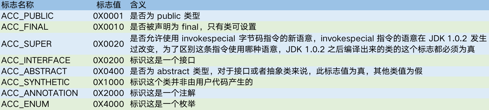
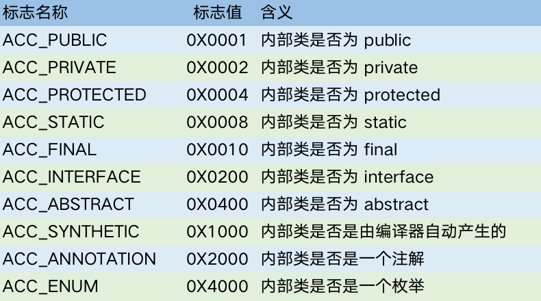
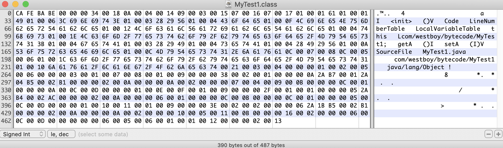
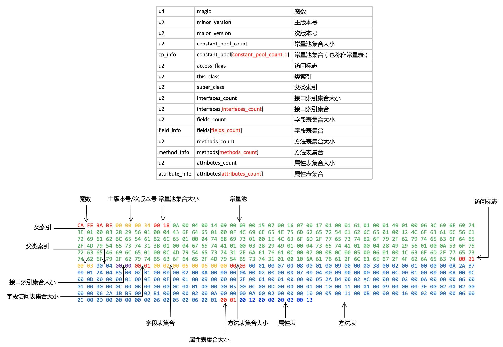

Class 文件是一组以 8 字节为基础单位的二进制流，各个数据项目严格按照顺序紧凑地排列在 Class 文件之中，中间没有添加任何分隔符。
在 Java 虚拟机规范的规定，Class 文件格式采用一种类似 C 语言结构体的伪结构来存储数据，这种伪结构只有两种数据类型：无符号数和表。无符号数属于基本的数据类型，以 u1、u2、u4、u8 来分别代表 1 个字节、2 个字节、4 个字节、8 个字节的无符号数，无符号数可以用来描述数字、索引引用、数量值或者按照 UTF-8 编码构成字符串值。表由多个无符号数或者其他表作为数据项构成复合数据类型，所有表都以 _info 结尾。表用于描述有层次关系的复合结构的数据，整个 Class 文件本质上就是一张表。
1 | ClassFile { |
1 魔数与 Class 文件版本
刚开始 4 个字节为魔数，魔数之后的 4 个字节为版本信息。
2 常量池
注意常量池存储的并不都全是不变的量。一个 Java 类中定义的很多信息都是由常量池来维护和描述的，因此可以将常量池看作是 class 文件的资源仓库，比如 Java 类中定义的方法与变量信息，都是存储在常量池中。
主要存放两大类常量：字面量和符号引用。字面量比较接近于 Java 语言层面的常量概念，如文本字符串、声明为 final 的常量值等。而符号引用则属于编译原理方面的概念，包括了下面三类常量：
- 类和接口的全限定名；
- 字段的名称和描述符；
- 方法的名称和描述符。
Java 代码在进行 Javac 编译时是在虚拟机加载 Class 文件的时候进行动态连接。也就是说，在 Class 文件中不会保存各个方法、字段的最终内存布局信息，因此这些字段、方法的符号引用不经过运行期转换的话无法得到真正的内存入口地址，也就无法直接被虚拟机使用。当虚拟机运行时，需要从常量池获取对应的符号引用，再在类创建时或运行时解析，翻译到具体的内存地址之中。
常量池中的每一项常量都是一个表，在 JDK 1.7 之后共有 14 中常量类型，不同类型的常量表结构不相同，所以常量池是最烦琐的数据。

在 JDK 1.7 中为了更好的支持动态语言调用，又额外增加了最后 3 种。
3 访问标志
在常量池结束之后，紧接着的两个字节代表访问标志，访问标志用于识别一些类或者接口层次的访问信息。
访问标志中一共 16 个标志位可以使用，当前只定义了其中 8 个，没有使用到的标志位要求一律为 0。
4 类索引、父类索引与接口索引集合
5 字段表集合
字段表用于描述类或者接口中声明的变量。字段包括类级变量以及实例变量，但不包括在方法内部声明的局部变量。
字段包含信息：
- 字段的作用域：public、private、protected 修饰符。
- 是实例变量还是类变量：static 修饰符。
- 可变性：final 修饰符。
- 并发可见性：volatile 修饰符，是否强制从主内存读写。
- 可否被序列化：transient 修饰符。
- 字段数据类型：基本类型、对象、数组。
- 字段名称。
字段表结构：
1 | field_info { |
字段访问标志：
注意：在实际情况中，ACC_PUBLIC、ACC_PRIVATE、ACC_PROTECTED 三个标志最多只能选择其一，ACC_FINAL 和 ACC_VOLATILE 不能同时选择。接口之中的字段必须有 ACC_PUBLIC、ACC_STATIC、ACC_FINAL 标志，这些都是由 Java 本身的语音规则所决定的。当一个字段没有访问修饰符时，即包级访问，访问标志为：0x0000。
跟随 access_flags 访问标志的是两项索引值：name_index 和 descriptor_index。它们都是对常量池的引用，分别代表着字段的简单名称以及字段和方法的描述符。
扩展：全限定名、简单名称和描述符解释：
- 全限定名：比如：com/westboy/bytecode/Demo; 就是一个全限定名，为了使连续的多个全限定名之间不产生混淆，在使用时最后一般会加入一个“;”表示全限定名结束。
- 简单名称：指没有类型和参数修饰的方法或者字段名称，比如 inc() 方法和 m 字段的简单名称分别是 inc 和 m。
- 描述符：在 Java 虚拟机规范中，每个变量或字段都有描述信息，描述信息主要作用是描述字段的数据类型、方法的参数列表（包括数量、类型和顺序）与返回值。根据描述符规则，基本数据类型和代表无返回值的 void 类型都用一个大写字符表示，对象类型则使用字符 L 加对象的全限定名来表示。为了压缩字节码文件的体积，对于基本数据类型，JVM 都只使用一个大写字母来表示，如下所示：B - byte，C - char，D - double，F -float，I - int，J - Long，S -short，Z - boolean，V - void，L - 对象类型，如 Ljava/lang/String。对于数组类型来说，每一个维度使用一个前置的 [ 来表示，如 int[] 被记录为“[I”，String[][] 被记录为：“[[Ljava/lang/String;”。用描述符描述方法时，按照先参数列表，后返回值的顺序来描述。参数列表按照参数的严格顺序放在一组括号内，如方法：int indexOf(char[] source, int sourceOffset, int sourceCount, char[] target, int targetOffset, int targetCount, int fromIndex) 的描述符为：“([CII[CIII)I”
6 方法表集合
方法表结构：
1 | method_info { |
方法访问标志：

7 属性表集合
在 Class 文件、字段表和方法表都可以携带自己的属性表集合，以用于描述某些场景专有的信息。
与 Class 文件中其他数据项目要求严格的顺序、长度和内容不同，属性表集合的限制稍微宽松了一些，不再要求各个属性表具有严格的顺序，并且只要不与已有的属性名重复，任何人实现的编译器都可以向属性表中写入自己定义的属性信息（即编译器也可以实现自定义的属性写入 Class 文件，供运行时使用），Java 虚拟机运行时会忽略掉它不认识的属性。
虚拟机规范预定义的属性：

对于每个属性，它的名称需要从常量池中引用一个 CONSTANT_Utf8_info 类型的常量来表示，而属性值的结构则是完全自定义的，只需要通过一个 u4 的长度属性去说明属性值所占用的位数即可。
7.1 Code 属性
Code 属性的作用是保存该方法的结构。但并非所有的方法表都必须存在这个属性，譬如接口或者抽象类中的方法就不存在 Code 属性。
Code 属性表结构：
1 | Code_attribute { |
7.2 Exceptions 属性
Exceptions 属性是在方法表中与 Code 属性平级的一项属性，注意不要与 Code 属性中的异常表产生混淆。Exceptions 属性的作用是列举出方法中可能抛出的受检查异常，也就是方法描述时在 throws 关键字后面列举的异常。
Exceptions 属性表结构：
1 | Exceptions_attribute { |
7.3 LineNumberTable 属性
LineNumberTable 属性用于描述 Java 源码行号与字节码行号（字节码的偏移量）之间的对应关系。它并不是运行时必须的属性，但默认会生成到 Class 文件之中，可以在 Javac 中分别使用 -g:none 或 -g:lines 选项来取消或要求生成这些信息。如果选择不生成 LineNumberTable 属性，对程序运行产生的最主要影响就是当抛出异常时，堆栈中将不会显示出错的行号，并且在调试程序的时候，也无法按照源码行来设置断点。
LineNumberTable 属性表结构：
1 | LineNumberTable_attribute { |
7.4 LocalVariableTable 属性
LocalVariableTable 属性用于描述栈帧中局部变量表中的变量与 Java 源码中定义的变量之间的关系，它也不是运行时必需的属性，但默认会生产到 Class 文件中，可以在 Javac 中分别使用 -g:none 或 -g:vars 选项来取消或要求生成这项选项。如果没有生成这项属性，最大的影响就是当其他人引用这个方法时，所有参数名称都将会丢失，IDE 将会使用诸如 args0，args1 之类的占位符代替原有的参数名，这对程序运行没有影响，但是会对代码编写带来较大不便，而且在调试期间无法根据参数名称从上下文中获得参数值。
LocalVariableTable 属性表结构：
1 | LocalVariableTable_attribute { |
在 JDK 1.5 引入泛型之后，LocalVariableTable 属性增加了一个“姐妹属性”：LocalVariableTypeTable，这个新增的属性结构与 LocalVariable 非常相似，仅仅是把记录的字段描述符的 descriptor_index 替换成了字段的特征签名（Signature），对于非泛型来说，描述符和特征签名能描述的信息是基本一致的，但是泛型引入之后，由于描述符中泛型的参数化类型被擦除掉，描述符就不能准确地描述泛型了，因此出现了 LocalVariableTypeTable。
7.5 SourceFile 属性
SourceFile 属性用于记录生成这个 Class 文件的源码文件名称。这个属性也是可选的，可以分别使用 Javac 的 -g:none 或 -g:source 选项来关闭或要求生成这项信息。对于大多数的类来说，类名和文件名是一致的，但是有一些特殊情况（如内部类）例外。如果不生成这项属性，当抛出异常时，堆栈中将不会显示出错代码所属的文件名。这个属性是一个定长的属性。
SourceFile 属性表结构：
1 | SourceFile_attribute { |
7.6 ConstantValue 属性
ConstantValue 属性的作用是通知虚拟机自动为静态变量赋值。只有被 static 关键字修饰的变量（类变量）才可以使用这项属性。对于非 static 类型的变量（也就是实例变量）的赋值是在实例构造器 <init> 方法中进行的；而对于类变量，则有两种方式可以选择：在类构造器 <clinit> 方法中或者使用 ConstantValue 属性。
目前 Sun Javac 编译器的选择是：如果同时使用 final 和 static 来修饰一个变量，并且这个变量的数据类型是基本类型或者 java.lang.String 的话，就生成 ConstantValue 属性来进行初始化，否则，将会在 <clinit> 方法中进行初始化。
虽然有 final 关键字才符合“ConstantValue”的语义，但虚拟机规范中并没有强制要求字段必须设置了 ACC_FINAL 标志，只要求了有 ConstantValue 属性的字段必须设置 ACC_STATIC 标志，对 final 关键字的要求是 Javac 编译器自己加入的限制。因为 Class 文件格式的常量类型中只有与基本属性和字符串相对应的字面量，所以 ConstantValue 的属性值也只能限定于基本类型和 java.lang.String 类型。
ConstantValue 属性表结构：
1 | ConstantValue_attribute { |
7.7 InnerClasses 属性
InnerClasses 属性用于记录内部类与宿主类之间的关联。如果一个类中定义了内部类，那编译器将会为它以及它所包含的内部类生成 InnerClasses 属性。
InnerClasses 属性表结构：
1 | InnerClasses_attribute { |
内部类的访问标志：
7.8 Deprecated 及 Synthetic 属性
Deprecated 及 Synthetic 两个属性都属于标志类型的布尔属性，只存在有和没有的区别，没有属性值的概念。
- Deprecated 属性用于表示某个类、字段或者方法，已经被程序作者定为不再推荐使用，可以通过在代码中使用 @deprecated 注释进行设置。
- Synthetic 属性代表此字段或者方法并不是由 Java 源码直接产生的，而是由编译器自行添加的。
Deprecated 及 Synthetic 属性表结构：
1 | Synthetic_attribute { |
7.9 StackMapTable 属性
7.10 Signature 属性
7.11 BootstrapMethods 属性
8 案例分析
8.1 准备
示例代码：
1 | public class MyTest1 { |
查看编译后的二进制文件，可以通过 Hex Fiend 软件将二进制转换成十六进制，方便后续分析。
再通过 javap -verbose 命令反解析信息：
1 | # javap -verbose target/classes/com/westboy/bytecode/MyTest1.class |
接下来，我们将逐步分析这个反解析过程，看下这些二进制文件怎么映射到上述反解析的结果。
8.2 总体结构
根据 Class 文件格式依次标出各个字段对应的十六进制范围。
需要注意的是：
- 从上图可以观察到占据 Class 文件空间最多的就是常量池与方法表。
- 常量池表集合实际大小 = constant_pool_count-1。
- 所有访问标志（类或接口的访问标志、方法的访问标志，字段的访问标志）均取它们组合的 & 操作，比如：此示例中的类访问标志为 0X0021，根据访问标志的 & 操作可以推到出该类的访问修饰符为 ACC_PUBLIC(0X0001) 与 ACC_SUPER(0X0020) 组合。
- 如果当前表的集合大小为 0 时，后续是没有任何表信息相关的内容，紧挨着的是下一个无符号数或者表。